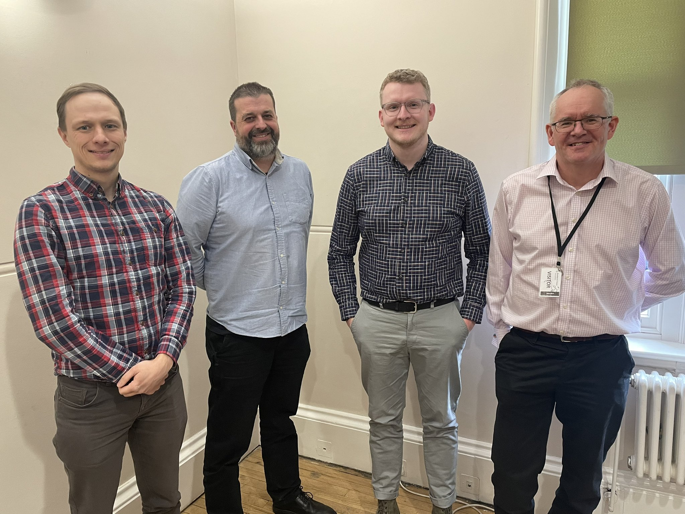

I got a PhD!!
Blackburne House, Liverpool, UK
“PhD Completed: Retail Centre Geographies: Who, What, Where and How”
Super thrilled to have successfully defended my PhD thesis, and passing with no corrections, becoming Dr. Patrick Ballantyne. Here are some thoughts on the experience…
On the 2nd March, I successfully defended my ESRC Centre for Doctoral Training PhD thesis at Liverpool University.
A huge thank you to my examiners Prof. Scott Orford, Cardiff University, Prof. Mark Birkin, University of Leeds and Dr. Mark Green, University of Liverpool. It was a hugely enjoyable experience getting to discuss the work that I have spent the last four years completing.

Acknowledgements
Undertaking a PhD amidst a global pandemic has presented significant challenges; nearly two years of mobility and travel restrictions have altered what is a ‘typical’ PhD experience. I feel that without the support of some key people, I would not have been able to successfully complete this thesis, so at this point I would like to pay tribute to some of these amazing people, and thank them for their help and support.
Firstly, to Prof. Alex Singleton, for his continuous academic (and personal) support throughout my PhD. Over the past four years, Alex has been incredibly kind, and ensured that my skills are refined and targeted at specific projects, to ensure I could complete my studies in time, whilst listening to my own interests and giving me plenty of ownership over my project. Alex has also given me lots of encouragement and opportunities to expand my academic portfolio, network and career, going above and beyond as a PhD supervisor, dedicating significant time to issues I have had over the past four years. I really appreciate the time and effort he put into this PhD project, helping shape me into the researcher I am today, and for that I am truly grateful.
Secondly, to my secondary supervisor Dr. Les Dolega. Les has always been on hand to offer support and advice on life in general, as well as how best to frame my research projects within the field of retail geography, often turning a paper/chapter draft around with constructive comments in a matter of days. I am particularly grateful to Les for his encouragement during my time as a Research Assistant and in the early months of my new role at Liverpool, which has given me the confidence to continue my academic journey at Liverpool as a Postdoctoral Researcher, and my interests in retail geography.
Thirdly, to my other co-authors Jacob Macdonald and Kevin Credit, as well as to the early-career panellists, Rachael Sanderson, and members of the QMRG committee, whom I worked with on a written commentary for the Geographical Journal. These people were instrumental in helping to push further publications over the line with their expertise and advice, but also gave me the opportunity to collaborate externally with other academics outside of Liverpool, which has opened a number of opportunities since, and inspired me to continue my academic journey.
Thanks to all at the CDRC, SafeGraph and Geolytix who have provided data that has been invaluable to my PhD. In particular, a big thanks to SafeGraph, who through their ‘Data for Academics’ programme made the primary objective of this PhD thesis feasible, following months of searching for useful and accessible sources of data on retailer locations for the U.S.
I also want to thank all of my colleagues at the Geographic Data Science Lab and CDRC, who have offered me general support, advice, and friendship, reviewed drafts of papers and been there to listen when I am facing significant challenges in my research. The GDSL has been a fantastic place to do a PhD, with each and every member having an impact on my overall PhD experience. There are too many people to mention here, but I particularly wanted to acknowledge the contributions of Alessia Calafiore, Martin Fleischmann, Maurizio Gibin (CDRC), Ollie O’Brien (CDRC), May Chen (CDRC), Natalie Rose, Olivia Horsefield, Dan Owen, Sian Teesdale, James Murphy, Krasen Samardzhiev, Nikos Patias, Michael Mahony, Maya Middleton-Welch, Francisco Rowe, Dani Arribas-Bel, Mark Green, Caitlin Robinson, Jeremiah Nieves, Ron Mahabir and Olga Gkountouna, all of whom have contributed in some way to ensuring my PhD is a success.
I also wanted to thank some of my closest friends, for their undying support over the past four years. Particular thanks to Tilly Clough, Ella Bytheway-Jackson, Libby Hopkins, John O’Neill, Jess Cerasale, Elaine Reilly and Clare Bohan, who have been there at various stages of my academic journey. Thank you to all of you for listening, discussing, supporting, and looking out for me over the past four years, and being there to celebrate my major achievements.
A final thanks goes to Mum and Dad. As the first of the family to go to university and first to complete a PhD, I want to thank you both for your undying support and understanding over the last 8 years, especially when I was facing significant personal issues or struggling with the pressures of doing a PhD in a pandemic. Your love and care during this time has given me the opportunity to flourish in my academic career without any major concerns or stresses, and I will be eternally grateful for this, especially given the challenges you already face with Liam. Unfortunately, Dad you can’t retire just yet (haha), but I hope to one day return the favour to you both.
Download my thesis
The final accepted version of my PhD thesis is available to read here.